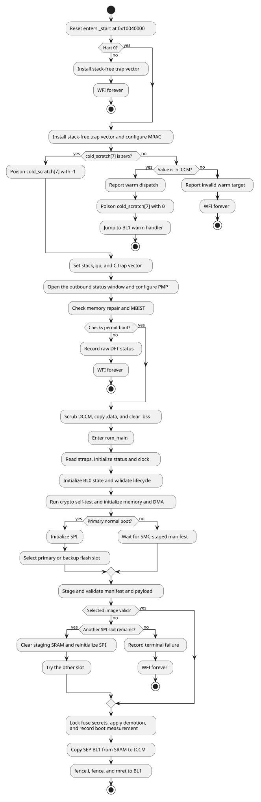

SEP Boot ROM
|
The production ROM firmware and this documentation are works in progress and are not ready for production use. |
1. Overview
The SEP production ROM is the immutable BL0 Root-of-Trust firmware. It starts at the SEP CPU reset vector, establishes a usable machine-mode environment, selects a manifest source, validates that manifest and its payload, and transfers control to SEP BL1 in ICCM.
The firmware has three cold-boot modes. A primary chiplet in normal mode reads the primary or backup manifest from SPI flash. A primary chiplet in recovery mode and every secondary chiplet wait for the SMC to stage a manifest in SMC SRAM. A warm reset takes a separate assembly path and may return directly to a BL1 handler in ICCM.
The implementation is divided into:
-
reset, warm-dispatch, memory-health, PMP, and C-runtime setup in
src/vector.S; -
boot orchestration in
src/rom_main.c; -
manifest and payload processing in
src/oca_boot.c, which drives the OCA validator library vendored attools/tt-oca-manifest/, with this ROM’s platform callbacks (key authorization, revocation, anti-rollback, signature verification, payload decryption) insrc/oca_platform.c; -
SPI, DMA, cryptographic, lifecycle, and SMC-interface support in
src/andinclude/; and -
ROM and DCCM placement in
link/rom.ld.
These implementation files are the source of truth for firmware ordering and
policy. SEP RTL, generated register collateral, the SEP memory-map chapter,
and link/rom.ld define hardware addresses and image placement. The production
Makefile and configs/ define build and packaging behavior. DV tests provide
observable execution evidence but do not define the architecture.
Successful BL0 execution does not return and does not report a BL0 pass.
rom_handoff_bl1() transfers control to BL1, which owns the eventual success
verdict. A terminal BL0 error records its status and parks the hart in wfi
until reset.
The SEP Boot ROM chapter of the Technical Reference Manual specifies the boot flow requirements that this firmware implements.
2. Boot flow
The assembly entry path handles every operation that must run before a stack or trustworthy DCCM exists. The C path starts only after the memory-health gate, DCCM scrub, and runtime initialization complete.

2.1. Assembly entry
_start parks every hart except hart 0. Hart 0 installs a trap vector that
does not use the stack, configures the CPU memory attributes, and examines
cold_scratch[7] before touching DCCM. This ordering preserves the BL1 runtime
state on a watchdog reset.
The cold path establishes the stack and global pointer, installs the C-capable
trap vector, opens the outbound filter window used by later firmware, and
programs PMP. It then evaluates the SMC memory-repair and MBIST status. A
failed check stops the boot unless the corresponding strap or
SKIP_MEM_CHECK fuse policy permits it. Only after this gate passes does the
ROM scrub DCCM, copy initialized data from ROM, clear BSS, and call
rom_main().
2.2. C boot sequence
rom_main() performs these operations in order:
-
Verify that
.dataand.bsswere initialized. -
Probe the SMC scratch round-trip and report the ROM version and hash.
-
Read the captured straps and initialize status reporting and the selected clock.
-
Initialize
bl0_state, check that its DCCM reserve does not overlap the stack, validate the lifecycle state, and read the chip ID. -
Run the peripheral/bus reset sequence and the SHA-256 self-test, apply the configured SRAM and ICCM initialization, read
SBOOT_DIS, install the stack canary, and initialize the DMA. -
Select SPI, recovery, or secondary mode.
-
Probe the SMC coordination state and check the stack canary.
-
Load and validate a manifest and payload.
-
Decide demotion, lock sensitive fuse reads, verify the lock, and record the boot measurement.
-
Copy BL1 to ICCM and transfer control.
Errors detected by C code converge on rom_err_fail(). The function records the
error in bl0_state when available, publishes machine-readable status, writes
the failure verdict, and enters a non-returning wfi loop.
A trap takes a separate path. trap_handler_c() writes the failure verdict
alone, so neither bl0_state nor the machine-readable status word records a
trap-terminated boot. Status and error reporting describes both trap
vectors.
3. Hardware initialization
3.1. Captured straps
The ROM reads the captured GPIO straps through the SMC supplementary window.
include/sep_smc_interface.h defines the SEP-visible offsets and bit
positions.
| Strap | Register bit | ROM field | Effect |
|---|---|---|---|
Primary chiplet |
|
|
Selects the SPI path when recovery is clear; otherwise selects the secondary SMC-SRAM path. |
Boot recovery |
|
|
Makes a primary chiplet wait for an SMC-staged manifest. |
BL0 PLL clock |
|
|
Selects the PLL initialization hook instead of the reference clock. |
Disable status reporting |
|
|
Skips the SMC-SRAM status ring; scratch-register status remains available. |
Bypass SRAM repair |
|
assembly only |
Skips the memory-repair result check because repair did not run. |
Bypass MBIST result |
|
assembly only |
Ignores the MBIST result. |
Rotate update |
|
|
Swaps the order of the primary and backup SPI manifest slots. |
3.2. Early CPU and fabric setup
The reset path programs the VeeR EL2 memory-region attributes before its first scratch-register access. It then configures the outbound filter window used by later firmware status traffic and programs PMP regions for the Boot ROM, DCCM, status mailbox, SEP SRAM, SEP peripherals, and ICCM.
The cold policy grants the SEP-visible SMC boot aperture at 0x4000_0000
through 0x407F_FFFF. This covers every SMC register and SRAM location the ROM
uses without granting the separate SMU aperture.
PMP_ENABLE controls whether these entries are programmed. Enabled entries are
locked, bound to machine mode with Smepmp MMWP, and remain non-executable
except for the Boot ROM until the selected BL1 destination is released at
hand-off.
3.3. Memory-health gate
Before writing DCCM, the assembly path reads the SMC DFX status. It checks that memory repair succeeded unless repair was bypassed, waits for MBIST completion, and checks that MBIST passed unless its result was bypassed. A failed, aborted, or timed-out check records the raw status in SMC scratch register 10.
The current code uses a fixed MBIST_DONE_WAIT_ITERS bound. This value is an
implementation limit rather than a calibrated silicon duration. If
STATUS_RPT.SKIP_MEM_CHECK is clear, failure is terminal; if it is set, the
boot continues. That bit is not allocated by the current SEP eFuse RDL and
must not be treated as a production fuse contract without a corresponding
register specification.
3.4. Runtime memory initialization
The cold path scrubs DCCM_SCRUB_BYTES, then copies .data from its ROM load
address and clears .bss. The default is the full 128 KiB DCCM, including the
reserved bl0_state area, so each word receives valid ECC before C uses it.
The C path can clear part or all of SEP SRAM according to SRAM_SCRUB_BYTES.
The open build defaults this value to zero because the programmed simulation
flow may preload data in that memory. The manifest load overwrites its staging
region, but this simulation choice does not define a production sanitization
policy.
ICCM is initialized through the secure DMA because the CPU load/store path
cannot write it. ROM_ICCM_CLEAR_ENABLE defaults to one. With
ROM_ICCM_CLEAR_FULL=0, the BL1 copy establishes ECC for the image and the
handoff clears a bounded pad beyond it so adjacent instruction fetches are
valid. Setting ROM_ICCM_CLEAR_FULL=1 clears the entire ICCM before handoff.
BUILD_TYPE=release selects release keys and output paths but does not change
these two defaults; a release policy that requires clearing all ICCM residue
must set ROM_ICCM_CLEAR_FULL=1. Both variables are part of the build-flags
stamp, so changing either rebuilds the affected objects.
3.5. C initialization
The C path validates its runtime state, initializes the SMC-backed status
channel when enabled, and selects the reference or PLL-derived clock. It then
initializes bl0_state, validates the lifecycle state, reports the SMC chip ID,
and runs SHA-256 over the NIST "abc" vector as a crypto-engine self-test.
The peripheral/bus reset function currently reports that the sequence is not implemented. DMA setup and the selected SPI-controller initialization occur later, immediately before boot-source processing.
4. Memory and security
4.1. Image and runtime layout
| Region | Address | Size | Use |
|---|---|---|---|
SEP SRAM |
|
256 KiB |
Manifest and payload staging. |
Boot ROM |
|
64 KiB |
BL0 code, metadata, read-only data, and the load image of |
External XIP window |
|
256 MiB aperture |
Memory-mapped external flash window; an accepted secure-DMA source, and the boot-flash source when built with |
SMC SRAM |
SEP view |
1 MiB |
Recovery/secondary manifest source and status ring storage. |
ICCM |
|
256 KiB |
Validated BL1 execution image. |
DCCM |
|
128 KiB |
BL0 writable data, BSS, stack, and BL0-to-BL1 state. |
The linker keeps .text, .metadata, and .rodata in ROM. .data executes
from DCCM but has a ROM load image. .bss and the stack occupy only DCCM. A
256-byte reserve at the top of DCCM holds struct bl0_state
(BL0_STATE_RESERVE_BYTES in include/bl0_state.h, which link/rom.ld must
match); runtime and compile-time checks keep the structure from overlapping the
downward-growing stack.
bl0_state gives BL1 the validated manifest address, boot mode, secure-boot
decision, lifecycle and feature-control values, last error, boot measurement,
deferred BL2 demotion decision, and the SRAM address of the BL1 image.
4.2. Security ordering
The following ordering is part of the ROM security contract:
-
Memory repair and MBIST are evaluated before the ROM writes or trusts DCCM.
-
The lifecycle state is validated before it can select secure-boot policy.
-
Manifest bounds and structure are checked before payload addresses are used.
-
For an encrypted image, the payload hash covers ciphertext and is checked before in-place decryption; the TOC is parsed only after decryption.
-
Image ranges are checked before image data is hashed.
-
Sensitive fuse reads are locked before the demotion register is written.
-
The stack canary is checked before the non-returning manifest and handoff path.
-
BL1 is copied only after the manifest, payload, TOC, and BL1 entry have all passed validation.
Hash and public-key digest comparisons accumulate differences over every byte instead of returning on the first mismatch.
4.3. Lifecycle and secure-boot policy
The lifecycle controller accepts TEST_DEV, PROD, PROD_END, and the defined RMA encodings. An invalid value causes BL0 to hold the SMC cores in reset, report a terminal error, and stop.
SBOOT_DIS is an eFuse override that disables secure boot. When it is clear,
PROD and PROD_END enforce secure boot regardless of the manifest request, and
so do TEST_DEV and RMA_SiP when CHIPLET_DBG is set in SIP_DIS or
SYS_DIS (or either vector is read-locked). Otherwise TEST_DEV and both RMA
states enable secure boot when the manifest requests it. An encrypted
payload is rejected when secure boot is not active.
4.4. Manifest authentication
The ROM always checks the SHA-256 manifest hash over the to-be-signed region. When secure boot is active it additionally:
-
compares the manifest security version with the thermometer-encoded
BL1_VERSIONfuse; -
selects a ROM-embedded or eFuse public-key digest;
-
checks the corresponding revocation bit;
-
binds the manifest RSA modulus to the selected digest; and
-
verifies the RSA-3072 PKCS#1 v1.5 signature with OTBN.
The public key in the manifest is therefore not trusted by itself. The Key Manager does not participate in this verification path.
4.5. Payload protection
The payload SHA-256 is checked on both secure and non-secure boots. Secure
encrypted images derive an AES-128 key from the CLASS_KEY fuse with
KBKDF-HMAC-SHA256 and decrypt the payload in place with AES-CBC. Temporary key,
salt, and derivation buffers are explicitly cleared.
After decryption, the ROM validates the TOC and every image extent, requires a
usable SEP BL1 entry, and verifies each image SHA-256. It does not clear the
bytes in gaps between described images or after the final image; payload gap
zeroing is an open gap in the implementation-status table of rom.adoc.
4.6. Secret locking, demotion, and measurement
Before handoff, BL0 read-locks CLASS_KEY, both RMA token digests, and the
chiplet, SiP, and system UIDs. Failure to read back all requested lock bits is
terminal.
PROD_END prevents demotion and locks both demotion registers. Other lifecycle
states apply the BL1 decision or preserve a deferred BL2 decision according to
the manifest. BL0 records a SHA-256 boot measurement over the manifest hash,
lifecycle, demotion decision, secure-boot state, and SBOOT_DIS. This digest
reports the selected boot state to BL1; it does not itself bind a key to that
state.
5. SPI and manifest processing
5.1. Flash transports
include/boot_flash.h presents one flash-offset interface to the manifest
loader. BOOT_SPI_CONTROLLER_OT selects the implementation at build time:
-
The default (
BOOT_SPI_CONTROLLER_OT=1) uses the OpenTitan SPI host. It issues command/FIFO transfers and drains its receive FIFO through the secure DMA (BOOT_OT_SPI_USE_PIO=0). Thepio-toolchain-imagesprofile selects CPU programmed I/O (BOOT_OT_SPI_USE_PIO=1) and writes its ROM tobuild_pio/. -
BOOT_SPI_CONTROLLER_OT=0reads memory-mapped flash through the external XIP window with the secure DMA. Controller bring-up is the weak hook set insrc/sep_spi.c, which reports the controller as absent; an integrator overrides it with a real driver throughOCAH_FW_OVERLAY_SOURCES_sep.
Controller initialization receives the clock selected earlier in the boot. Failure is not immediately terminal because the loader can proceed to another configured slot.
5.2. Boot source and slot selection
The SPI path uses fixed manifest offsets:
| Slot | Manifest offset | Selection |
|---|---|---|
Primary |
|
First unless |
Backup |
|
Second unless |
On recovery or secondary boot, the ROM does not use either SPI offset. It waits
for SMC_SEP_STATUS_MANIFEST_READY, reads the manifest offset from SMC scratch
register 8, and adds that offset to the SEP-visible SMC SRAM base.
5.3. Manifest layout
The manifest is an OCA classic manifest with a 4096-byte body. Bytes
[0, 3172) are the signed region — everything from the magic through the
four-byte 0xCA trailer at offset 3168 — which both the RSA signature and the
manifest hash cover. Bytes [3172, 4096) are the unsigned tail holding the
signature, the manifest hash and the payload offset. Because the payload offset
is in that tail it is attacker-controlled even on a validly signed manifest, so
the ROM bounds it against the region the slot may reach rather than trusting it.
The payload begins with a PTOC header followed by the image entries and their
image data.
The format and its numeric constants come from the OCA specification and its
layout header, tools/tt-oca-manifest/validators/oca/lib/oca_layout_classic.h,
vendored as a submodule. The YAML files under configs/ are test-image producer
inputs; they do not supersede the format the library consumes on BL0’s behalf.
5.4. Per-slot validation
For each selected slot, BL0 performs this sequence:
-
Read the fixed manifest header into SEP SRAM.
-
Validate the identifier, major version, manifest length, alignment, payload offset and length, SRAM bounds, and non-overlap.
-
Verify the manifest hash.
-
Decide whether secure boot is active and apply selected lifecycle, chiplet ID, and package ID usage constraints.
-
Read any permitted manifest extension and stage the payload.
-
Under secure boot, check rollback, authorize and check the root key, verify RSA-3072, verify the payload hash, and decrypt an encrypted payload. Without secure boot, still verify the payload hash.
-
Validate the TOC, image count, image order and bounds, per-image hashes, and the presence and placement of SEP BL1.
An encrypted payload is authenticated as ciphertext before decryption. The TOC inside it is interpreted only after decryption.
5.5. Retry behavior
The SPI path can attempt both slots. rotate_update exchanges their order. A
failed attempt records its error; before another attempt BL0 clears the SEP
SRAM staging region and reinitializes the flash controller. A failed
reinitialization is terminal because the remaining slot cannot be read.
The SMC-SRAM path has one source and no alternate slot. Exhausting the
available attempts reports SEP_MSG_MANIFEST_LOAD_FAILED and enters the common
failure path.
5.6. Verification evidence
hw/sys/sep/dv/cocotb/tests/rom_fw/sep_rom_ot_secure_boot_test.py exercises
the signed OpenTitan SPI-host DMA path. It requires evidence that the ROM took
the SPI source, read the primary manifest at 0x1000, started RSA
verification, accepted the signature, and completed crypto validation. It also
forbids SBOOT_OFF, so a silent downgrade cannot satisfy the test.
That testcase injects deterministic raw noise at the entropy-source
decorrelator inputs with +esrc_noise_force because the ring oscillators do
not self-oscillate under Verilator. BL0 brings up the entropy source, CSRNG,
and EDN chain; the health tests and downstream command handshakes remain real.
The test therefore demonstrates ROM entropy-chain initialization as well as
the manifest, transport, OTBN RSA, and handoff paths. It does not demonstrate
the physical ring-oscillator noise source.
The DMA and PIO receive paths are covered separately because they are separate
datapaths. sep_rom_ot_pio_boot_test runs the build_pio image, which does
not link ot_spi_flash_read_dma at all, so passing one of the two proves
nothing about the other. hw/sys/sep/dv/testlists/rom_fw.toml lists the whole
ROM regression; the cases named here are the ones that bear directly on
manifest and transport processing, not the extent of ROM coverage.
6. SMC coordination
SEP reaches SMC resources through its outbound AXI path at
SEP_SMC_GLOBAL_BASE, 0x4000_0000. The offsets and status bits in
include/sep_smc_interface.h form the SEP side of the interface contract.
They are SEP-visible offsets and must not be replaced with SMC-local absolute
addresses.
6.1. Shared scratch registers
SMC CPU-control scratch registers have an eight-byte stride. The table covers
every low 32-bit entry SEP BL0 consumes or writes, together with the entries the
shared interface reserves for SMC alone. include/sep_smc_interface.h names all
of them except index 7, which BL0 addresses by literal index:
| Index | Name | BL0 role | Use |
|---|---|---|---|
1 |
POST code |
None |
SMC boot-status publication. |
2 |
Virtual console |
None |
SMC debug text channel. |
7 |
Scratch round-trip probe |
Writes |
BL0 writes four test patterns, reads each back, and clears the entry to zero before it selects a boot source. A read-back mismatch is terminal. SMC must not keep its own state here. |
8 |
Manifest address |
Consumes |
Byte offset of an SMC-staged manifest from the SMC SRAM base. |
9 |
Status to SEP |
Consumes |
SMC-to-SEP readiness flags. |
10 |
MBIST failure |
Writes |
Raw DFX status recorded by the SEP pre-C memory-health gate. |
11 |
Status-buffer address |
Consumes |
Byte offset of the SEP status ring from the SMC SRAM base. |
13, 14 |
SEP-safe SRAM start and size |
None |
SMC-published range available to SEP. |
15 |
Memory-repair status |
None |
SMC memory-repair result. |
Scratch register 9 defines four readiness flags: SRAM initialized, manifest ready, status buffer ready, and SRAM protected. BL0 reads the flags relevant to the operation it is about to perform rather than treating the word as one global ready indication.
6.2. Manifest handoff
Recovery and secondary boot wait until the manifest-ready bit is set. BL0 then reads the offset from scratch register 8 and forms the source address as:
SEP_SMC_GLOBAL_BASE + SMC_SRAM_OFFSET + manifest_offsetThe resulting manifest and payload must remain inside the one-MiB SMC SRAM window. The ROM copies them to SEP SRAM before validation and execution.
The two halves of that window requirement are enforced differently, and an
integrator has to account for both. The ROM checks the payload source range
itself: a payload that starts below the SMC SRAM base or ends above it is
rejected with OCA_FAIL_PAYLOAD_LOCATION (console PAYLOAD_LOC_FAIL), as is an address computation that
overflows. The manifest header read is not checked. BL0 adds the offset from
scratch register 8 to the SMC SRAM base and issues the header transfer without
a range or overflow test, so keeping that offset inside the window is SMC’s
obligation. A header read from outside the window is caught only afterwards, by
the manifest identifier, version, length, and hash checks on the bytes it
returned.
The normal primary-chiplet SPI path does not consume the SMC manifest offset, but it still uses SMC for captured straps, DFX status, chip identity, and status reporting.
6.3. Status-buffer handoff
When status reporting is enabled, BL0 waits for the status-buffer-ready bit in scratch register 9. It reads the ring-buffer offset from scratch register 11, checks that the ring header lies within SMC SRAM, and then publishes non-debug status through that ring. SEP owns the ring head and SMC owns the tail.
An invalid offset leaves the scratch-register status channel operational and prevents BL0 from writing through an untrusted ring pointer.
6.4. Probe behavior
Before loading a manifest, rom_smc_coordination_probe() reports the status
word, manifest offset, and status-buffer offset for diagnosis. The probe does
not replace the blocking checks in manifest and status initialization; it
records whether the corresponding SMC state was already ready at that point.
7. Status and error reporting
BL0 uses SEP cold scratch registers for channels that must be reachable before the outbound fabric and C runtime are available.
| Register | Channel | Contract |
|---|---|---|
|
Terminal verdict |
BL0 writes the failure value only. A successful boot transfers to BL1, which owns the pass verdict. |
|
Machine-readable status |
Carries encoded status and error values throughout assembly and C execution. |
|
Virtual console |
Carries packed debug characters when debug output is compiled in. |
|
Warm-reset handler |
Carries the BL1 ICCM re-entry address across a watchdog reset. |
7.1. Status encoding
include/errors.h encodes a status as an eight-bit type, an eight-bit firmware
stage ID, and a 16-bit value. BL0 uses information, warning, error, debug, and
extended-information types. include/status_values.h is the authoritative
registry for SEP_MSG_* values; consumers should use its names rather than
copying numeric values from this document.
Every status is written to cold_scratch[1]. Debug values stop there. Other
types are also offered to the SMC-SRAM ring when ring reporting is enabled and
valid.
7.2. Status ring
The status ring is lock-free: SEP advances head, and SMC advances tail.
Before an entry write, BL0 validates the entry count, head, tail, remaining
capacity, and destination address. An invalid state reports
SEP_MSG_STATUS_REPORTING_INVALID through cold_scratch[1] and does not write
the entry.
Capacity is reserved by severity. Informational status preserves space for a warning and an error; warning status preserves space for an error. At the reservation boundary BL0 inserts the corresponding overflow marker. An error can use the final free entry.
7.3. Trap handling
The reset path first installs a stack-free trap vector. It records a general
exception status followed by mcause, mtval, and mepc, then restores the
decodable status word and writes the failure verdict. It uses only SEP scratch
registers, so an early exception does not depend on external address decode.
After the stack is valid, BL0 installs the C-capable trap vector. It reports the same CSRs through the debug console, writes the terminal failure verdict, and stops.
7.4. Error convergence
C error paths converge on rom_err_fail(). When bl0_state is initialized,
the function stores the full error code there. It also publishes an encoded
error in cold_scratch[1], writes the failure verdict in
cold_scratch[0], and enters a wfi loop.
Manifest failures use the MANIFEST_ERR_* namespace, formed as
OCA_BOOT_ERR_BASE | oca_result_t — the OCA library’s verdict carried in the
low byte. The enumeration is
tools/tt-oca-manifest/validators/oca/lib/oca_validator.h, and
status_for_result() in src/oca_boot.c is the only bridge between it and the
SEP_MSG_* codes the status ring carries.
Other terminal firmware errors are defined next to their owning implementation
or in include/errors.h. These registries, rather than this document, are the
source of numeric values.
Memory-repair and MBIST failure can occur before the C runtime and
bl0_state exist. That path records the raw DFX word in SMC scratch register
10, leaves a terminal status in cold_scratch[1], and stops without relying on
the outbound mailbox.
8. BL1 handoff
The payload TOC may describe SEP and SMC images. BL0 scans it for the first
IMAGE_TYPE_SEP_BL1 entry and validates that the complete image lies inside
ICCM, that its length is nonzero and no larger than ICCM, and that its entry
offset lies inside the image. These checks run during payload validation and
are repeated at handoff.
8.1. ICCM copy
The VeeR EL2 instruction-fetch unit can execute from ICCM, but the CPU load/store unit cannot read or write it. ICCM and DCCM occupy the same VeeR region, and load/store address checking treats ICCM addresses outside the DCCM offset as unmapped.
BL0 therefore uses the secure DMA to copy the validated BL1 bytes from the
payload in SEP SRAM to the entry’s ICCM load address. A CPU memcpy cannot
replace this transfer.
BL1’s binary contains executable code and the load image of its own read-only
and writable data. Because BL1 also cannot read its ICCM copy, BL0 stores the
payload source address in bl0_state.bl1_image_src_addr. BL1 startup uses that
SRAM source when initializing DCCM.
8.2. Transfer of control
The entry address is the ICCM load address plus the TOC entry offset. After the
DMA succeeds, BL0 writes the entry to mepc, executes fence.i and fence,
and uses mret to transfer control. This makes the newly written instructions
visible to the fetch unit and completes prior memory activity before BL1 runs.
The handoff is non-returning. Reaching its caller again is an error. BL0 does not publish a success verdict before the transfer; BL1 proves successful execution through its own status path.
8.3. Shared state
BL1 locates struct bl0_state at the top of DCCM and validates its leading and
trailing magic words and size. The structure communicates:
-
the validated manifest and BL1 source addresses;
-
selected boot mode and secure-boot state;
-
lifecycle and feature-control values;
-
the boot measurement and deferred BL2 demotion decision; and
-
the last BL0 error, when execution did not reach handoff.
BL0 and BL1 must use the same include/bl0_state.h layout.
8.4. Warm-reset return
BL1 may place an ICCM handler address in SEP cold_scratch[7] before enabling
the watchdog. This register bank survives the warm watchdog reset. On reset,
BL0 reads the slot before setting a stack or touching DCCM:
-
zero selects a cold boot, after which BL0 poisons the slot with
-1; -
an address inside ICCM makes BL0 clear the slot to 0 and transfer control to the handler, so BL1 must re-arm the slot on every handler entry; and
-
any other nonzero value reports an invalid target and stops.
The direct warm path preserves BL1 DCCM and ICCM state. The handler must restore any CPU state reset by the watchdog before resuming normal execution.